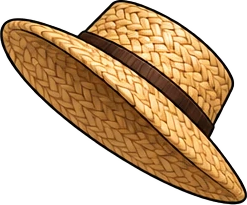

<!doctype html>
<html lang="en">
<head>
<meta charset="utf-8">
<title>Madagascar — 5 Facts</title>
<style>
*{box-sizing:border-box;margin:0;padding:0}
html,body{width:1080px;height:1920px;overflow:hidden;background:#06182a}
body{font-family:'Inter Display','Inter',sans-serif;-webkit-font-smoothing:antialiased;color:#111218}
.abs{position:absolute}
.pill{position:absolute;display:flex;align-items:center;justify-content:center;white-space:nowrap;border-radius:999px;background:rgba(255,255,255,.96);box-shadow:0 14px 30px -14px rgba(10,20,40,.5)}
svg{display:block}
</style>
</head>
<body>
<div id="glw" class="abs" style="inset:0;background:#06182a">
 <canvas id="glc" width="1080" height="1920" class="abs" style="left:0;top:0"></canvas>
 <svg id="gls" class="abs" style="left:0;top:0" width="1080" height="1920"></svg>
 <svg id="glo" class="abs" style="left:0;top:0" width="1080" height="1920"></svg>
</div>
<div id="dim" class="abs" style="inset:0;background:#041222;opacity:0"></div>
<div id="card" class="abs" style="left:80px;top:430px;width:920px;height:720px;border-radius:40px;overflow:hidden;border:8px solid #fff;box-shadow:0 30px 60px -20px rgba(0,0,0,.6);transform-origin:50% 50%;visibility:hidden">
 <svg id="cardsvg" width="904" height="704" viewBox="8 8 904 704"></svg>
</div>
<div id="ui" class="abs" style="inset:0"></div>
<script src="lib/d3-array.min.js"></script>
<script src="lib/d3-geo.min.js"></script>
<script src="lib/topojson-client.min.js"></script>
<script src="lib/world10m.js"></script>
<script src="lib/world50m.js"></script>
<script src="tex/globe_tex.js"></script>
<script src="sat/det_ref.js"></script>
<script src="sat/det_mad.js"></script>
<script src="sat/det_mclose.js"></script>
<script src="mart.js"></script>
<script src="mbc/meta.js"></script>
<script>
const FPS=60,BLUE='#2f7bf5',DUR=93,CY=790;
const $=id=>document.getElementById(id);
const clamp=(v,a=0,b=1)=>Math.min(b,Math.max(a,v)),seg=(t,a,b)=>clamp((t-a)/(b-a)),lerp=(a,b,t)=>a+(b-a)*t;
const eo=p=>1-Math.pow(1-p,3),eio=p=>p<.5?4*p*p*p:1-Math.pow(-2*p+2,3)/2;
const eb=p=>{const c1=1.7,c3=c1+1;return 1+c3*Math.pow(p-1,3)+c1*Math.pow(p-1,2)};
const bounce=p=>{const n=7.5625,d=2.75;if(p<1/d)return n*p*p;if(p<2/d)return n*(p-=1.5/d)*p+.75;if(p<2.5/d)return n*(p-=2.25/d)*p+.9375;return n*(p-=2.625/d)*p+.984375};
const mk=(parent,h)=>{const d=document.createElement('div');d.innerHTML=h.trim();const e=d.firstChild;$(parent).appendChild(e);return e};
const vis=(el,o)=>{el.style.opacity=o;el.style.visibility=o<=.003?'hidden':'visible'};

// ───────── places (real coordinates; aye-aye and nano-chameleon get a region, not a fake exact point)
const PL={tsingy:[44.8,-18.85],baobab:[44.418,-20.25],east:[48.9,-17.2],andasibe:[48.43,-18.93],north:[49.4,-13.7]};
const NAMES={tsingy:'TSINGY DE BEMARAHA',baobab:'AVENUE OF THE BAOBABS',east:'EASTERN FORESTS',andasibe:'ANDASIBE',north:'NORTHERN MADAGASCAR'};
const FACTS=[
 {k:'tsingy',fly:[5,6.5],open:[6.5,7.6],close:[19.5,20.2],back:[20.2,21],topic:'STONE FOREST'},
 {k:'baobab',fly:[21,23],open:[23,24.2],close:[36.5,37.2],back:[37.2,38],topic:'BAOBABS'},
 {k:'east',area:1,fly:[38,39.5],open:[39.5,40.6],close:[53.5,54.2],back:[54.2,55],topic:'AYE-AYE'},
 {k:'andasibe',fly:[55,56.3],open:[56.3,57.3],close:[70.5,71.2],back:[71.2,72],topic:'SINGING LEMURS'},
 {k:'north',area:1,fly:[72,73.5],open:[73.5,74.6],close:[85.8,86.4],back:[86.4,87],topic:'NANO-CHAMELEON'}];
const VO=[[.08,.75,'A stone forest.'],[.85,1.6,'Singing lemurs.'],[1.7,2.72,'A fingertip-sized chameleon.'],[3.2,4.6,'This is Madagascar.'],
 [6.2,19,'This forest is made of stone. At Tsingy de Bemaraha, limestone forms a maze of sharp needles. Some rise a hundred metres high. Yes, that tiny figure is a person.'],
 [23,34.5,'These trees look like someone planted them upside down. They’re baobabs. Several species grow naturally only in Madagascar. At the Avenue of the Baobabs, their enormous trunks tower over the road.'],
 [40.2,53.4,'Meet the aye-aye. It taps on wood and listens for hidden insect tunnels. Then it gnaws through the bark and uses its long middle finger to hook out dinner. A built-in toolkit.'],
 [57,57.9,'Listen to this.'],[60.1,70.3,'That’s an indri, a singing lemur. Researchers found rhythmic patterns in its songs that also appear in human music. A family can join in, turning the forest into a chorus.'],
 [74.6,77.1,'How small do you think this chameleon is?'],[78.3,85.6,'An adult male of this species had a body just thirteen point five millimetres long, without the tail. It fits on a fingertip.'],
 [87.3,91.4,'Which fact surprised you most? Comment one to five—and choose our next country.']];
const KEY=/^(stone|lemurs\.|chameleon\.|Madagascar\.|hundred|person\.|baobabs\.|only|aye-aye\.|finger|toolkit\.|indri,|music\.|chorus\.|small|thirteen|millimetres|fingertip\.|one|five—and|country\.)/i;

// ───────── UI
const shine=`<div class="shn abs" style="inset:0;border-radius:inherit;overflow:hidden;pointer-events:none"><div class="abs" style="top:-20%;bottom:-20%;width:38%;left:0;background:linear-gradient(100deg,transparent,rgba(255,255,255,0) 20%,rgba(160,200,255,.55) 50%,rgba(255,255,255,0) 80%,transparent);transform:translateX(-160%) skewX(-18deg)"></div></div>`;
const setShine=(el,u)=>{const s=el.querySelector('.shn>div');if(s)s.style.transform=`translateX(${lerp(-160,360,u).toFixed(1)}%) skewX(-18deg)`};
const TL='MADAGASCAR'.split('');
const TITLE=mk('ui',`<div class="pill" style="left:540px;top:245px;height:110px;padding:0 60px;border-radius:38px;font-weight:900;font-size:76px;letter-spacing:.02em">${TL.map(c=>`<span class="tl" style="display:inline-block">${c}</span>`).join('')}${shine}</div>`);
const FACTP=mk('ui',`<div class="pill" style="left:540px;top:350px;height:60px;padding:0 28px;font-weight:700;font-size:26px;letter-spacing:.07em;overflow:hidden"><span id="fp5">5 SURPRISING FACTS</span><span id="fpf" style="display:none">FACT&nbsp;<span style="display:inline-block;position:relative;width:1.4em;height:1.2em;overflow:hidden;color:${BLUE};font-weight:900;vertical-align:top"><span id="fn0" class="abs" style="left:0;top:0;width:100%;text-align:center"></span><span id="fn1" class="abs" style="left:0;top:0;width:100%;text-align:center"></span></span>/ 05<span style="margin:0 .5em;color:#b7bdc9">·</span><span id="ftop" style="color:${BLUE};font-weight:800"></span></span>${shine}</div>`);
const MB=mk('ui',`<div class="abs" style="left:205px;top:1330px;width:0;height:0"><div id="mbsh" class="abs" style="left:-100px;top:108px;width:200px;height:28px;border-radius:50%;background:radial-gradient(closest-side,rgba(0,0,0,.45),rgba(0,0,0,0))"></div><div id="mbb" class="abs" style="left:0;top:0;width:0;height:0"></div><svg id="mbfx" class="abs" style="left:-200px;top:-260px;overflow:visible" width="400" height="400"></svg></div>`);
const INFO=mk('ui',`<div class="abs" style="left:640px;top:1322px;transform:translate(-50%,-50%);width:540px;min-height:176px;padding:24px 28px;border-radius:40px;background:rgba(255,255,255,.97);box-shadow:0 18px 40px -18px rgba(10,20,40,.55);display:flex;flex-direction:column;align-items:center;justify-content:center;text-align:center"><div id="infc" style="display:flex;flex-direction:column;align-items:center"></div>${shine}</div>`);
const SUB=mk('ui',`<div class="abs" style="left:540px;top:1532px;transform:translate(-50%,-50%);padding:16px 36px;border-radius:999px;background:rgba(255,255,255,.96);box-shadow:0 16px 34px -16px rgba(10,20,40,.55);font-weight:600;font-size:40px;text-align:center;white-space:nowrap"></div>`);
const HOOK=mk('ui',`<div class="pill" style="left:540px;top:1080px;height:84px;padding:0 40px;border-radius:30px;font-weight:900;font-size:46px;letter-spacing:.02em"></div>`);
const ICONS=mk('ui',`<div class="abs" style="left:540px;top:${CY}px;transform:translate(-50%,-50%);display:flex;gap:22px">${ART.icons.map((s,i)=>`<div class="ic" style="display:flex;flex-direction:column;align-items:center;gap:12px"><div style="width:156px;height:156px;border-radius:44px;background:#fff;box-shadow:0 18px 36px -16px rgba(0,0,0,.6);display:flex;align-items:center;justify-content:center"><svg width="104" height="104" viewBox="0 0 100 100">${s}</svg></div><div style="width:56px;height:56px;border-radius:50%;background:${BLUE};color:#fff;font-weight:900;font-size:32px;display:flex;align-items:center;justify-content:center">${i+1}</div></div>`).join('')}</div>`);
const pillT=(el,o,s=1,dy=0)=>{el.style.transform=`translate(-50%,-50%) translateY(${dy}px) scale(${s})`;vis(el,o)};
function kin(lines,t,t0){let k=0;return lines.map(([txt,fs,col,extra=''])=>`<div style="font-weight:900;font-size:${fs}px;line-height:1.08;letter-spacing:-.01em;color:${col};white-space:nowrap;${extra}">`+txt.split(' ').map(w=>{const p=clamp((t-t0-k*.07)/.38);k++;const s=.7+.3*eb(p);
  return `<span style="display:inline-block;margin:0 .12em;opacity:${Math.min(1,p*2).toFixed(3)};transform:translateY(${((1-eo(p))*26).toFixed(1)}px) scale(${s.toFixed(3)});filter:blur(${((1-p)*6).toFixed(2)}px)">${w}</span>`}).join('')+'</div>').join('')}
const typeOn=(txt,t,t0,cps=26)=>{const n=Math.floor(clamp((t-t0)*cps,0,txt.length));return txt.slice(0,n)};
const WORDS=[];VO.forEach(([a,b,txt],li)=>{const ws=txt.split(' '),wt=ws.map(w=>w.length+3),T=wt.reduce((s,v)=>s+v,0);let t=a;ws.forEach((w,i)=>{WORDS.push({txt:w,t,li,key:KEY.test(w)});t+=(b-a)*wt[i]/T})});
const CH=[];{let cur=[];WORDS.forEach((w,i)=>{cur.push(w);const nx=WORDS[i+1],len=cur.reduce((s,x)=>s+x.txt.length+1,0);if(/[.?!:—,]$/.test(w.txt)&&cur.length>=3||/[.?!]$/.test(w.txt)||len>=30||!nx||nx.li!==w.li){CH.push(cur);cur=[]}})}
CH.forEach((c,i)=>{const nx=CH[i+1];c.t0=c[0].t;c.t1=nx&&nx[0].li===c[0].li?nx[0].t-.02:VO[c[0].li][1]+.3});
const lc=(a,b,t)=>a.map((v,i)=>Math.round(v+(b[i]-v)*t)),LB=[157,182,234],NV=[43,58,103],BK=[17,18,24],BLc=[47,123,245],GR=[150,156,170];
function renderSub(t){if(t<3.1){vis(SUB,0);return}const c=CH.find(c=>t>=c.t0-.01&&t<c.t1+.15);if(!c){vis(SUB,0);return}const ex=clamp((t-c.t1)/.15),inn=eb(clamp((t-c.t0)/.2));vis(SUB,1-ex*.9);SUB.style.transform=`translate(-50%,-50%) scale(${(.92+.08*inn).toFixed(3)})`;
  SUB.innerHTML=c.filter(w=>t>=w.t).map(w=>{const p=clamp((t-w.t)/.28),q=clamp((t-w.t-.28)/.25);let col=w.key?lc(LB,BLc,p):p<1?lc(LB,NV,p):lc(NV,BK,q);if(ex>0)col=lc(col,GR,ex);
    return `<span style="display:inline-block;margin:0 .1em;color:rgb(${col});opacity:${Math.min(1,p*1.6)};filter:blur(${((1-p)*8+ex*5).toFixed(2)}px);transform:translateY(${((1-p)*16).toFixed(1)}px);${w.key?'font-weight:800':''}">${w.txt}</span>`}).join(' ')}

// ───────── globe (WebGL orthographic, NASA Blue Marble) + Natural Earth borders; Japan highlight in the house style
const GL=$('glc').getContext('webgl',{preserveDrawingBuffer:true,antialias:true});
const VS=`attribute vec2 p;void main(){gl_Position=vec4(p,0.,1.);}`;
const FS=`precision highp float;uniform sampler2D tex;uniform sampler2D det;uniform vec2 C;uniform float R;uniform vec2 L;
uniform vec3 DG;uniform vec2 DS;uniform float DON;
void main(){vec2 q=(gl_FragCoord.xy-C)/R;float r2=dot(q,q);vec3 bg=vec3(.024,.094,.165);
  if(r2>1.){float d=sqrt(r2)-1.;float g=exp(-d*R/38.)*.55+exp(-d*R/140.)*.18;gl_FragColor=vec4(bg+vec3(.35,.6,1.)*g,1.);return;}
  vec3 v=vec3(q.x,q.y,sqrt(1.-r2));float cl=cos(L.y),sl=sin(L.y);vec3 w=vec3(v.x,v.y*cl+v.z*sl,-v.y*sl+v.z*cl);
  float lon=atan(w.x,w.z)+L.x,lat=asin(clamp(w.y,-1.,1.));float fx=fract(lon/6.2831853+.5);vec2 uv=vec2(fx,.5-lat/3.1415927);
  vec3 c=texture2D(tex,uv).rgb;
  if(DON>0.){float ym=log(tan(.78539816+clamp(lat,-1.47,1.47)*.5));vec2 d=vec2((fx*DG.x-DG.y)/DS.x,((1.-ym/3.1415927)*.5*DG.x-DG.z)/DS.y);
    float wg=smoothstep(0.,.03,d.x)*smoothstep(0.,.03,1.-d.x)*smoothstep(0.,.03,d.y)*smoothstep(0.,.03,1.-d.y);c=mix(c,texture2D(det,d).rgb,wg*DON);}
  c*=1.08;float limb=pow(v.z,.35);c=c*(.55+.45*limb)+vec3(.3,.55,1.)*pow(1.-v.z,3.)*.55;gl_FragColor=vec4(c,1.);}`;
const sh=(t,src)=>{const o=GL.createShader(t);GL.shaderSource(o,src);GL.compileShader(o);if(!GL.getShaderParameter(o,GL.COMPILE_STATUS))throw new Error(GL.getShaderInfoLog(o));return o};
const PG=GL.createProgram();GL.attachShader(PG,sh(GL.VERTEX_SHADER,VS));GL.attachShader(PG,sh(GL.FRAGMENT_SHADER,FS));GL.linkProgram(PG);GL.useProgram(PG);
GL.bindBuffer(GL.ARRAY_BUFFER,GL.createBuffer());GL.bufferData(GL.ARRAY_BUFFER,new Float32Array([-1,-1,1,-1,-1,1,1,1]),GL.STATIC_DRAW);
const aP=GL.getAttribLocation(PG,'p');GL.enableVertexAttribArray(aP);GL.vertexAttribPointer(aP,2,GL.FLOAT,false,0,0);
const U={};['C','R','L','DG','DS','DON','tex','det'].forEach(n=>U[n]=GL.getUniformLocation(PG,n));GL.uniform1i(U.tex,0);GL.uniform1i(U.det,1);
const TEX=new Image();TEX.src=GLOBE_SRC;
TEX.onload=()=>{GL.activeTexture(GL.TEXTURE0);const t=GL.createTexture();GL.bindTexture(GL.TEXTURE_2D,t);GL.texImage2D(GL.TEXTURE_2D,0,GL.RGB,GL.RGB,GL.UNSIGNED_BYTE,TEX);
  [GL.TEXTURE_MIN_FILTER,GL.TEXTURE_MAG_FILTER].forEach(p=>GL.texParameteri(GL.TEXTURE_2D,p,GL.LINEAR));[GL.TEXTURE_WRAP_S,GL.TEXTURE_WRAP_T].forEach(p=>GL.texParameteri(GL.TEXTURE_2D,p,GL.CLAMP_TO_EDGE))};
const DETIMG={},DETTEX={};Object.keys(DET_SRC).forEach(k=>{const im=new Image();im.src=DET_SRC[k];DETIMG[k]=im});
function bindDet(k){if(!k){GL.uniform1f(U.DON,0);return}
  if(!DETTEX[k]){GL.activeTexture(GL.TEXTURE1);const t=GL.createTexture();GL.bindTexture(GL.TEXTURE_2D,t);GL.texImage2D(GL.TEXTURE_2D,0,GL.RGB,GL.RGB,GL.UNSIGNED_BYTE,DETIMG[k]);
    [GL.TEXTURE_MIN_FILTER,GL.TEXTURE_MAG_FILTER].forEach(p=>GL.texParameteri(GL.TEXTURE_2D,p,GL.LINEAR));[GL.TEXTURE_WRAP_S,GL.TEXTURE_WRAP_T].forEach(p=>GL.texParameteri(GL.TEXTURE_2D,p,GL.CLAMP_TO_EDGE));DETTEX[k]=t}
  GL.activeTexture(GL.TEXTURE1);GL.bindTexture(GL.TEXTURE_2D,DETTEX[k]);GL.activeTexture(GL.TEXTURE0);
  const r=DET_REF[k];GL.uniform3f(U.DG,256*2**r.z,r.X0*256,r.Y0*256);GL.uniform2f(U.DS,r.W,r.H);GL.uniform1f(U.DON,1)}
const C10=topojson.feature(WORLD10,WORLD10.objects.countries).features,C50=topojson.feature(WORLD50,WORLD50.objects.countries).features;
const JP10=C10.find(c=>c.id==='450'),JP50=C50.find(c=>c.id==='450');
const MESH10=topojson.mesh(WORLD10,WORLD10.objects.countries,(a,b)=>a!==b),MESH50=topojson.mesh(WORLD50,WORLD50.objects.countries,(a,b)=>a!==b);
const GPR=d3.geoOrthographic().clipAngle(90).precision(.3),GPATH=d3.geoPath(GPR);
// camera views: fit a lon/lat box into a screen rect
function fit(lo0,lo1,la0,la1,rect){const pts=[];for(let i=0;i<=24;i++){const f=i/24;pts.push([lerp(lo0,lo1,f),la0],[lerp(lo0,lo1,f),la1],[lo0,lerp(la0,la1,f)],[lo1,lerp(la0,la1,f)])}
  const lon=(lo0+lo1)/2,lat=(la0+la1)/2,pr=d3.geoOrthographic().rotate([-lon,-lat]).fitExtent(rect,{type:'MultiPoint',coordinates:pts});return {lon,lat,R:pr.scale(),tx:pr.translate()[0],ty:pr.translate()[1]}}
const V={start:fit(30,58,-29,-8,[[90,440],[990,1150]]),island:fit(42.6,51,-25.8,-11.8,[[120,440],[960,1150]])};
FACTS.forEach(f=>{const [x,y]=PL[f.k],r=f.area?2.6:1.5;V[f.k]=fit(x-r,x+r,y-r*.8,y+r*.8,[[90,460],[990,1150]])});
const hl=(d,o,fo=.34)=>`<g opacity="${o}"><path d="${d}" fill="${BLUE}" fill-opacity="${fo}"/><path d="${d}" fill="none" stroke="#7fb2ff" stroke-width="12" stroke-opacity=".45" stroke-linejoin="round" style="filter:blur(5px)"/><path d="${d}" fill="none" stroke="#fff" stroke-width="3.2" stroke-linejoin="round"/></g>`;
function drawGlobe(c,o={}){const {lon,lat,R,tx,ty}=c;
  GL.viewport(0,0,1080,1920);GL.uniform2f(U.C,tx,1920-ty);GL.uniform1f(U.R,R);GL.uniform2f(U.L,lon*Math.PI/180,lat*Math.PI/180);bindDet(R>2600?'mclose':R>700?'mad':null);GL.drawArrays(GL.TRIANGLE_STRIP,0,4);
  GPR.rotate([-lon,-lat]).scale(R).translate([tx,ty]);const fine=R>1500;
  const fo=.34*(1-clamp((R-2600)/3000))+.06;   // fill fades when we are close to a place
  $('gls').innerHTML=`<path d="${GPATH(fine?MESH10:MESH50)||''}" fill="none" stroke="#fff" stroke-width="1.4" stroke-opacity=".5"/>`+((o.hl??1)>.01?hl(GPATH(fine?JP10:JP50)||'',o.hl??1,fo):'')}
const proj=p=>GPR(p);
function slerp(a,b,u){const r=Math.PI/180,va=[Math.cos(a[1]*r)*Math.cos(a[0]*r),Math.cos(a[1]*r)*Math.sin(a[0]*r),Math.sin(a[1]*r)],vb=[Math.cos(b[1]*r)*Math.cos(b[0]*r),Math.cos(b[1]*r)*Math.sin(b[0]*r),Math.sin(b[1]*r)];
  const d=Math.acos(clamp(va[0]*vb[0]+va[1]*vb[1]+va[2]*vb[2],-1,1));if(d<1e-6)return a;const s1=Math.sin((1-u)*d)/Math.sin(d),s2=Math.sin(u*d)/Math.sin(d);
  const v=va.map((x,i)=>x*s1+vb[i]*s2);return [Math.atan2(v[1],v[0])/r,Math.asin(clamp(v[2],-1,1))/r]}
const mix=(A,B,u)=>{const e=eio(u),c=slerp([A.lon,A.lat],[B.lon,B.lat],e);return {lon:c[0],lat:c[1],R:Math.exp(lerp(Math.log(A.R),Math.log(B.R),e)),tx:lerp(A.tx,B.tx,e),ty:lerp(A.ty,B.ty,e)}};
function camera(t){
  if(t<5)return V.start;
  for(let i=0;i<FACTS.length;i++){const f=FACTS[i],from=i===0?V.start:V.island;if(t<f.fly[0])return from;
    if(t<f.fly[1])return mix(from,V[f.k],seg(t,f.fly[0],f.fly[1]));
    if(t<f.back[0])return V[f.k];
    if(t<f.back[1])return mix(V[f.k],V.island,seg(t,f.back[0],f.back[1]))}
  if(t<91.5)return V.island;
  return mix(V.island,V.tsingy,seg(t,91.5,92.6))}

// ───────── Madagascarball rig: the artist's sheets played frame by frame (roll-in, hat drop, squash & stretch hop,
// valiha solo, turnaround, roll-out); frames stand on one ground line via the bottom of the ball
const MBK={h:240/253,v:240/264,s:240/226,t:240/419};
const MBI={};Object.keys(MBM).forEach(k=>{const i=document.createElement('img');i.src=`mbc/${k}.png`;i.className='abs';i.style.opacity=0;const m=MBM[k],kk=MBK[k[0]];
  i.style.width=(m.w*kk)+'px';i.style.left=(-m.ax*kk)+'px';i.style.top=(120-m.ay*kk)+'px';$('mbb').appendChild(i);MBI[k]=i});
const seq=(t,t0,list)=>{let a=t0;for(const [k,d] of list){if(t<a+d)return k;a+=d}return null};
const HOP=[['s02',.06],['s03',.06],['s04',.06],['s05',.1],['s06',.12],['s07',.1],['s08',.08],['s09',.06],['s10',.06],['s11',.07],['s12',.07]];
const HOPS=[[15.5,46],[26.1,56],[33.2,38],[44.6,36],[51.1,52],[65.1,46],[81.1,60]];
const SPARK=[15.85,26.45,51.45,65.45,81.45,89.9];
const BLINKS=[];for(let b=6.4;b<92;b+=2.8)BLINKS.push(b);
function mbState(t){let s='h01',dx=0,dy=0,rot=0;
  if(t<3.62){s=seq(t,2.75,[['v01',.45],['v02',.12],['v03',.18],['h01',.12]])||'h01';if(t<3.2)dx=-320*(1-eo(seg(t,2.75,3.2)))}
  else if(t<5.15)s=seq(t,3.62,[['h02',.18],['h03',.18],['h04',.12],['h05',.12],['h06',.16],['h07',.24],['h08',9]]);
  for(const [h0,H] of HOPS)if(t>=h0&&t<h0+.84){s=seq(t,h0,HOP);const a=seg(t,h0+.12,h0+.58);dy=-H*4*a*(1-a)}
  if(t>=61.4&&t<66.4){s=t<61.7?'v04':t<62?'v05':t<65.4?(Math.floor((t-62)/.22)%2?'v07':'v06'):t<65.8?'v08':'v09'}
  if(t>=87&&t<89.2)s='t06';
  if(t>=89.2&&t<92){s=seq(t,89.2,[['t01',.1],['t02',.1],['t03',.1],['t04',.1],['t05',.1],['t01',9]])}
  if(t>=92){s=seq(t,92,[['s02',.12],['v10',.12],['v11',.12],['v10',.12],['v11',9]]);dx=-440*eio(seg(t,92.12,92.7))}
  if((s==='h01'||s==='t01'||s==='t06')&&BLINKS.some(b=>t>=b&&t<b+.1))s+='b';
  rot+=-3*Math.sin(seg(t,34.5,36.5)*Math.PI)+5*Math.sin(seg(t,57,58.8)*Math.PI)+4*Math.sin(seg(t,78.3,79.2)*Math.PI);
  return {s,dx,dy,rot,vis:seg(t,2.75,2.8)*(1-seg(t,92.6,92.75))}}
function renderMB(t){const m=mbState(t);
  Object.entries(MBI).forEach(([k,i])=>i.style.opacity=k===m.s?1:0);
  const idle=t>5.2&&t<92&&!HOPS.some(([h])=>t>=h&&t<h+.84)?3*Math.sin(t*2*Math.PI/1.9):0;
  $('mbb').style.transform=`translate(${m.dx.toFixed(1)}px,${(m.dy+idle).toFixed(1)}px) rotate(${m.rot.toFixed(2)}deg)`;
  // the hat blows off as the camera takes off for fact 1
  const hf=$('hatfly');if(t>=5.15&&t<5.9){const u=seg(t,5.15,5.9);hf.style.opacity=1-seg(u,.75,1);hf.style.left=(-115-260*eo(u)).toFixed(1)+'px';hf.style.top=(-210-520*eo(u)+80*u*u).toFixed(1)+'px';hf.style.transform=`rotate(${(-20-300*u).toFixed(1)}deg) scale(${(1-.3*u).toFixed(3)})`}else hf.style.opacity=0;
  const hs=clamp(1-(-m.dy)/240,.3,1);$('mbsh').style.transform=`translateX(${m.dx.toFixed(1)}px) scale(${hs.toFixed(3)})`;$('mbsh').style.opacity=(hs*m.vis).toFixed(3);vis(MB,m.vis);
  let fx='';for(const s0 of SPARK){const u=(t-s0)/.55;if(u<0||u>=1)continue;for(let i=0;i<8;i++){const a=i/8*6.283+.3,r=150+u*70,x=200+Math.cos(a)*r,y=260+Math.sin(a)*r*.9,sc=(1-u)*(i%2?9:14);
    fx+=`<path d="M${x} ${y-sc} L${x+sc*.28} ${y-sc*.28} L${x+sc} ${y} L${x+sc*.28} ${y+sc*.28} L${x} ${y+sc} L${x-sc*.28} ${y+sc*.28} L${x-sc} ${y} L${x-sc*.28} ${y-sc*.28}Z" fill="${i%2?'#ffd34d':'#fff'}" opacity="${(1-u).toFixed(2)}"/>`}}
  if(t>=62&&t<65.8)for(let k=0;k<6;k++){const u=((t-62)*.8+k/6)%1;const x=330+u*60+Math.sin(u*9+k)*14,y=170-u*190;fx+=`<text x="${x.toFixed(1)}" y="${y.toFixed(1)}" font-size="${(30+k%2*10).toFixed(0)}" fill="#fff" opacity="${(Math.sin(u*Math.PI)).toFixed(2)}" font-family="Inter,sans-serif">${k%2?'♫':'♪'}</text>`}
  $('mbfx').innerHTML=fx}

// ───────── info plate segments
const SMALL=s=>`<div style="margin-top:10px;font-weight:700;font-size:21px;letter-spacing:.06em;color:#7d8597;white-space:nowrap">${s}</div>`;
const chain=(t,steps)=>`<div style="display:flex;align-items:center;gap:10px;font-weight:900;font-size:40px;white-space:nowrap">`+steps.map(([w,a],i)=>{const p=clamp((t-a)/.35);if(p<=0)return '';const act=i===steps.filter(s=>t>=s[1]).length-1;
  return (i?`<span style="color:#b7bdc9;opacity:${p}">→</span>`:'')+`<span style="display:inline-block;color:${act?BLUE:'#111218'};opacity:${Math.min(1,p*2)};transform:translateY(${((1-eo(p))*20).toFixed(1)}px) scale(${(.7+.3*eb(p)).toFixed(3)})">${w}</span>`}).join('')+'</div>';
const PLATES=[
 {a:9,b:19.5,parts:[{a:9,b:13,f:t=>kin([['LIMESTONE',44,'#111218'],['NEEDLES',52,BLUE]],t,9.1)},{a:13,b:19.5,f:t=>kin([['UP TO',36,'#111218'],['100 M',72,BLUE]],t,13.1)+SMALL(typeOn('SOME PEAKS · TSINGY',t,14))}]},
 {a:23.6,b:36.4,parts:[{a:23.6,b:26,f:t=>kin([['UPSIDE',44,'#111218'],['DOWN?',56,BLUE]],t,23.7)},{a:26,b:30,f:t=>kin([['BAOBABS',62,BLUE]],t,26.1)+SMALL(typeOn('AVENUE OF THE BAOBABS',t,26.6))},{a:30,b:36.4,f:t=>kin([['FOUND',40,'#111218'],['ONLY HERE',52,BLUE]],t,30.1)+SMALL(typeOn('SEVERAL BAOBAB SPECIES',t,30.9))}]},
 {a:40.7,b:53.4,parts:[{a:40.7,b:51,f:t=>kin([['AYE-AYE',34,'#7d8597']],t,40.8)+`<div style="height:8px"></div>`+chain(t,[['TAP',41],['LISTEN',43.5],['REACH',48.6]])},{a:51,b:53.4,f:t=>kin([['A BUILT-IN',38,'#111218'],['TOOLKIT',54,BLUE]],t,51.1)}]},
 {a:57,b:70.4,parts:[{a:57,b:60.1,f:t=>kin([['LISTEN',58,BLUE]],t,57.05)+`<div style="display:flex;gap:6px;margin-top:10px;height:34px;align-items:center">${[...Array(9)].map((_,i)=>`<div style="width:8px;border-radius:4px;background:${BLUE};height:${(8+Math.abs(Math.sin(i*1.3+t*(t>58?7:2)))*(t>58?26:8)).toFixed(1)}px"></div>`).join('')}</div>`},
   {a:60.1,b:65,f:t=>kin([['THEY HAVE',38,'#111218'],['RHYTHM',58,BLUE]],t,60.2)},{a:65,b:70.4,f:t=>kin([['FAMILY',44,'#111218'],['CHORUS',58,BLUE]],t,65.1)}]},
 {a:74.6,b:85.7,parts:[{a:74.6,b:81,f:t=>kin([['HOW',40,'#111218'],['SMALL?',62,BLUE]],t,74.7)},{a:81,b:85.7,f:t=>{const n=(13.5*eo(seg(t,81.1,82))).toFixed(1),pk=t>=82&&t<82.4?.16*Math.sin(seg(t,82,82.4)*Math.PI):0;return `<div style="font-weight:900;font-size:84px;line-height:1;color:${BLUE};font-variant-numeric:tabular-nums;transform:scale(${(1+pk).toFixed(3)})">${n} MM</div>`+SMALL(typeOn('BODY · EXCLUDING TAIL',t,82.1))}}]},
 {a:87.2,b:91.5,parts:[{a:87.2,b:89.3,f:t=>kin([['WHICH FACT',38,'#111218'],['SURPRISED YOU?',40,BLUE]],t,87.3)},{a:89.3,b:91.5,f:t=>kin([['COMMENT',40,'#111218'],['1 – 5',66,BLUE]],t,89.4)+SMALL(typeOn('& PICK THE NEXT COUNTRY ↓',t,90))}]}];
function renderInfo(t){const P=PLATES.find(p=>t>=p.a&&t<p.b);if(!P){vis(INFO,0);return}
  const pin=eb(seg(t,P.a,P.a+.35)),pout=seg(t,P.b-.2,P.b);const part=P.parts.find(q=>t>=q.a&&t<q.b);
  const po=part?1-seg(t,part.b-.18,part.b)*(part.b<P.b?1:0):1;
  $('infc').innerHTML=part?part.f(t):'';$('infc').style.opacity=po;
  INFO.style.transform=`translate(-50%,-50%) translateY(${(pout*18).toFixed(1)}px) scale(${((.8+.2*pin)*(1-.1*pout)).toFixed(3)})`;vis(INFO,clamp(seg(t,P.a,P.a+.15))*(1-pout));setShine(INFO,seg(t,P.a+.35,P.a+1.05))}

// ───────── card scenes
function scene(k,t){
  if(k==='tsingy')return ART.tsingy({pan:eio(seg(t,9,13)),outline:seg(t,9.6,11.8),scale:seg(t,13,14.4),person:1,ring:t<19.4?seg(t,15.4,15.9):0,par:Math.sin(seg(t,6.8,9)*Math.PI)});
  if(k==='baobab')return ART.baobab({zoom:eio(seg(t,26,30)),t,person:seg(t,27.5,28.3)});
  if(k==='east')return ART.ayeaye({tap:seg(t,41,41.9),ear:Math.sin(seg(t,40.6,41)*Math.PI),cut:eio(seg(t,43,44))*(1-seg(t,53,53.4)),rings:t>=43.6&&t<45.6?seg(t,43.6,45.6):-1,gnaw:seg(t,47,48.6),reach:seg(t,48.6,50.8),t});
  if(k==='andasibe')return ART.indri({listen:seg(t,57,57.4)*(1-seg(t,60.4,60.8)),sing:(t>=58&&t<60.1?1:0)+(t>=65.4?seg(t,65.4,66):0)*.8,fam:eio(seg(t,65,66.2)),t});
  if(k==='north')return ART.chameleon({zoom:eio(seg(t,78,80.5)),meas:seg(t,81,82.4),eye:Math.sin(seg(t,84.6,85.1)*Math.PI),t});
  return ''}
function hookScene(t){if(t<.8)return ART.tsingy({pan:seg(t,0,.8)*.05,person:0});if(t<1.65)return ART.indri({sing:.9,t});return ART.chameleon({zoom:0,t})}

function renderAt(t){
  t=Math.min(t,DUR-1e-6);
  const c=camera(t);drawGlobe(c,{hl:seg(t,2.9,3.3)});
  let ov='';const F=FACTS.find(f=>t>=f.fly[0]-.6&&t<f.back[1]);
  if(F){const p=proj(PL[F.k]),a=seg(t,F.fly[0]-.6,F.fly[0]-.3)*(1-seg(t,F.back[0],F.back[0]+.3));
    if(p&&a>0){const pu=seg(t,F.fly[0]-.3,F.fly[0]+.6),gw=eo(seg(t,F.fly[0]-.2,F.fly[0]+.3)),full=NAMES[F.k].length*15+44,lw=lerp(46,full,gw);
      const mark=F.area?`<ellipse cx="${p[0]}" cy="${p[1]}" rx="${(70+10*Math.sin(t*3)).toFixed(1)}" ry="${(56+8*Math.sin(t*3)).toFixed(1)}" fill="${BLUE}" fill-opacity=".18" stroke="#fff" stroke-width="3" stroke-dasharray="10 8"/>`
        :`<circle cx="${p[0]}" cy="${p[1]}" r="${(14+pu*46).toFixed(1)}" fill="none" stroke="#fff" stroke-width="3" opacity="${((1-pu)*.85).toFixed(2)}"/><circle cx="${p[0]}" cy="${p[1]}" r="${(11*eb(seg(t,F.fly[0]-.6,F.fly[0]-.3))).toFixed(1)}" fill="#fff"/><circle cx="${p[0]}" cy="${p[1]}" r="6" fill="${BLUE}"/>`;
      const lx=F.area?p[0]-lw/2:p[0]+22,ly=F.area?p[1]-120:p[1]-58;
      ov+=`<g opacity="${a}">${mark}<g transform="translate(${lx.toFixed(1)} ${ly.toFixed(1)})"><rect width="${lw.toFixed(1)}" height="46" rx="23" fill="#fff"/><text x="22" y="31" font-family="Inter Display,Inter" font-weight="800" font-size="21" letter-spacing=".05em" fill="#111218">${typeOn(NAMES[F.k],t,F.fly[0]+.05,32)}</text></g></g>`}}
  $('glo').innerHTML=ov;
  // card
  let k=null,u=0,p=[540,CY],html='';
  if(t<3.4){u=t<2.75?1:1-eio(seg(t,2.75,3.4));p=proj([46.8,-19.2])||p;html=hookScene(t)}
  const CF=FACTS.find(f=>t>=f.open[0]&&t<f.close[1]);
  if(CF){p=proj(PL[CF.k])||p;u=t<CF.open[1]?eio(seg(t,CF.open[0],CF.open[1])):1-eio(seg(t,CF.close[0],CF.close[1]));html=scene(CF.k,t)}
  if(t>=92.1){p=proj(PL.tsingy)||p;u=eio(seg(t,92.1,93));html=ART.tsingy({pan:0,person:0})}
  if(u>0){const s=lerp(.08,1,u),x=lerp(p[0]-540,0,u),y=lerp(p[1]-CY,0,u),pulse=t<2.75?1-.035*(Math.sin(seg(t,.74,.9)*Math.PI)+Math.sin(seg(t,1.59,1.75)*Math.PI)):1;
    $('card').style.transform=`translate(${x.toFixed(1)}px,${y.toFixed(1)}px) perspective(1600px) rotateX(${((1-u)*22).toFixed(2)}deg) scale(${(s*pulse).toFixed(4)})`;$('card').style.borderRadius=`${lerp(400,40,u)}px`;vis($('card'),clamp(u*5));
    const fl=t<2.75?Math.max(1-Math.abs(t-.8)/.08,1-Math.abs(t-1.65)/.08,0):0;$('cardsvg').innerHTML=html+(fl>0?`<rect width="920" height="720" fill="#fff" opacity="${(fl*.7).toFixed(2)}"/>`:'');
    $('dim').style.opacity=(.3*u).toFixed(3);if(CF)setShine($('card'),seg(t,CF.open[1]-.3,CF.open[1]+.6))}
  else{vis($('card'),0);$('dim').style.opacity=0}
  // hook labels in the card
  const HK=[[0,.8,'STONE FOREST'],[.8,1.65,'SINGING LEMURS'],[1.65,2.75,'TINY CHAMELEON'],[92.45,93.1,'STONE FOREST']].find(h=>t>=h[0]&&t<h[1]);
  if(HK){HOOK.innerHTML=HK[2].split('').map((ch,i)=>`<span style="display:inline-block;opacity:${clamp((t-HK[0]-i*.012)/.1)}">${ch===' '?'&nbsp;':ch}</span>`).join('');const pp=HK[0]===0?1:eb(seg(t,HK[0],HK[0]+.25));pillT(HOOK,HK[0]===0?1:clamp(seg(t,HK[0],HK[0]+.08)),.8+.2*pp)}else vis(HOOK,0);
  // title slides open at the reveal, fades at the very end for the loop
  TITLE.querySelectorAll('.tl').forEach((e,i)=>{const q=clamp((t-3.05-i*.04)/.35);e.style.opacity=Math.min(1,q*2);e.style.transform=`translateY(${((1-eo(q))*40).toFixed(1)}px)`});
  const to=seg(t,2.95,3.15)*(1-seg(t,92.3,92.8));TITLE.style.clipPath=`inset(0 ${((1-eo(seg(t,2.95,3.5)))*50).toFixed(1)}% 0 ${((1-eo(seg(t,2.95,3.5)))*50).toFixed(1)}% round 38px)`;pillT(TITLE,to);setShine(TITLE,seg(t,3.8,4.6));
  // fact pill: "5 SURPRISING FACTS" → "FACT 0N / 05 · TOPIC" with a rolling digit
  const inF=t>=5&&t<87;$('fp5').style.display=inF?'none':'inline';$('fpf').style.display=inF?'inline':'none';
  let fi=1,lt=5;FACTS.forEach((f,i)=>{if(t>=f.fly[0]){fi=i+1;lt=f.fly[0]}});const r=eio(seg(t,lt,lt+.35));
  $('fn0').textContent='0'+(fi-1);$('fn1').textContent='0'+fi;$('fn0').style.transform=`translateY(${(-r*110).toFixed(1)}%)`;$('fn1').style.transform=`translateY(${((1-r)*110).toFixed(1)}%)`;$('fn0').style.opacity=fi>1?1-r:0;
  $('ftop').textContent=typeOn(FACTS[fi-1].topic,t,lt+.15,30);
  const fo=seg(t,3.4,3.7)*(1-seg(t,91.5,91.7));pillT(FACTP,fo,(.85+.15*eb(seg(t,3.4,3.8)))*(1+.08*Math.sin(seg(t,lt,lt+.35)*Math.PI)));setShine(FACTP,seg(t,lt+.2,lt+.9));
  renderMB(t);renderInfo(t);
  if(t>=87&&t<91.6){ICONS.style.visibility='visible';const out=seg(t,91.2,91.6);ICONS.style.opacity=1-out;ICONS.style.transform=`translate(-50%,-50%) scale(${(1-out*.1).toFixed(3)})`;
    [...ICONS.children].forEach((e,i)=>{const q=seg(t,87.1+i*.14,87.6+i*.14),act=t>=89.4?1+.06*Math.sin((t-89.4)*4+i):1;e.style.opacity=Math.min(1,q*3);e.style.transform=`translateY(${((1-bounce(q))*-160).toFixed(1)}px) rotate(${((1-eo(q))*(i%2?10:-10)).toFixed(1)}deg) scale(${act.toFixed(3)})`})}else vis(ICONS,0);
  renderSub(t);
}
// ───────── sound events
const SFX=[];const sx=(t,type,g=1,d=0)=>SFX.push({t:+t.toFixed(4),type,g,d});
sx(0,'impact',.7);sx(0,'air',.3,.9);sx(.8,'unfold',.4);sx(1.65,'unfold',.4);sx(2.75,'fold',.45);sx(2.8,'air',.4,1.6);sx(3.2,'land',.55);sx(3.62,'whoosh',.3,.4);sx(3.98,'cap',.55);sx(4.1,'boing',.3);sx(5.15,'whoosh',.35,.7);
FACTS.forEach(f=>{sx(f.fly[0],'whoosh',.5,f.fly[1]-f.fly[0]+.2);sx(f.fly[0]-.6,'pop',.35);sx(f.open[0],'unfold',.5);sx(f.close[0],'fold',.42);sx(f.back[0],'rwhoosh',.42)});
sx(9.6,'accent',.4);[13,13.3,13.6].forEach(a=>sx(a,'tick',.4));sx(15.4,'pop',.4);sx(34.5,'wind',.35,2.4);sx(39.6,'night',.35,14);
[41.03,41.33,41.63].forEach(a=>sx(a,'knock',.6));sx(43,'accent',.35);sx(43.6,'ping',.35);sx(44.3,'ping',.25);sx(47.2,'gnaw',.4,1.2);sx(50.6,'accent',.4);
sx(56.3,'forest',.4,14.8);for(let i=0;i<15;i++)sx(62+i*.22,'valiha',.35,i);sx(65.1,'accent',.35);
sx(77.5,'air',.35,1);sx(78.2,'chime',.5);sx(81,'tick',.35);
HOPS.forEach(([h,H])=>{sx(h+.1,'boing',.22+H/400);sx(h+.6,'land',.3)});SPARK.forEach(s=>sx(s,'sparkle',.28));
for(let i=0;i<5;i++)sx(87.1+i*.14,'pop',.42);sx(89.2,'whoosh',.3,.6);sx(92.15,'whoosh',.3,.6);sx(92.1,'unfold',.4);
window.SFX=SFX;window.SCN={dur:DUR,vo:VO.map(v=>[v[0],v[1]]),duck:[[57.4,60.1,.18],[77,78.2,.3]]};window.renderAt=renderAt;window.DUR=DUR;window.VO=VO;
$('card').insertAdjacentHTML('beforeend',shine);
(TEX.complete?Promise.resolve():new Promise(r=>TEX.addEventListener('load',r))).then(()=>Promise.all([...Object.values(DETIMG),...Object.values(MBI),$('hatfly')].map(i=>i.complete?1:new Promise(r=>{i.onload=r;i.onerror=r})))).then(()=>document.fonts.ready).then(()=>{renderAt(0);window.ready=true});
</script>
</body>
</html>
